In this tutorial we demonstrate the adaptive solution of free surface problems on unstructured meshes, using the example of a bubble propagating along a straight channel. We also demonstrate how to impose volume constraints on enclosed regions within the fluid.
The example problem
We illustrate the solution of the unsteady 2D Navier-Stokes equations by considering the propagation of a single bubble along a straight channel as shown in the sketch below. We non-dimensionalise all lengths on the channel width, 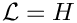, velocities on the maximum (prescribed) inflow velocity, 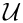, and time on the intrinsic timescale, 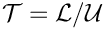 , which corresponds to a Strouhal number 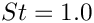 .

The problem is then governed by the following equations.
Solve
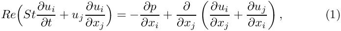
and
![\[ \frac{\partial u_i}{\partial x_i} = 0, \]](form_5.png)
in the rectangular domain 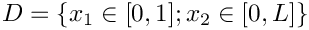 , subject to the Dirichlet boundary conditions
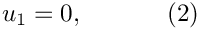
on the top and bottom boundaries and
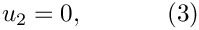
on all boundaries. The inflow on the left boundary is described by a Poiseuille flow profile
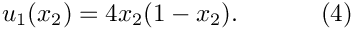
The free surface is defined by the position vector , which is subject to the kinematic condition
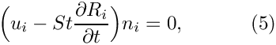
and the dynamic condition
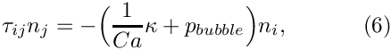
where the stress tensor is defined as
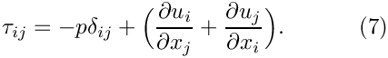
The initial position of the interface, for a bubble initially located in the centre of the channel, is given by
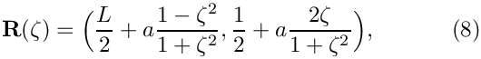
where  is the initial non-dimensional bubble radius and 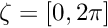.
is the initial non-dimensional bubble radius and 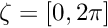.
The problem is subject to the constraint that the bubble volume, 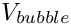, remains constant which is achieved by adjusting, the bubble pressure, 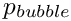 . We formulate the volume constraint by making use of Gauss` theorem, which states that for any vector 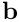
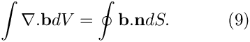
Choosing 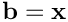 we note that the divergence of  gives the spatial dimension
gives the spatial dimension  and the integral 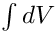 is the enclosed volume 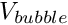. Hence, the volume constraint can be written as
and the integral 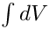 is the enclosed volume 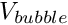. Hence, the volume constraint can be written as
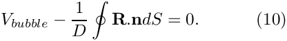
This is the equation that determines the unknown bubble pressure .
Implementation
We solve the governing equations using an ALE-based finite-element method, discretising the fluid domain with triangular Taylor-Hood elements, and updating the mesh with a pseudo-elastic node-update procedure.
As usual, we impose the kinematic and dynamic boundary conditions with FaceElements. The volume constraint is imposed in a similar way: We attach LineVolumeConstraintBoundingSolidElements to the bubble surface to compute the line integrals in equation (10), and create an additional VolumeConstraintElement which adds to this equation and is also "in
charge" of the unknown bubble pressure.
Results
We perform the simulation in a two-stage procedure. We start by performing a steady solve with the inflow switched off. This deforms the bubble into its steady state (approximately) circular configuration with the required volume. The actual time-dependent simulation is then performed with an impulsive start from this configuration.
The figure below shows a contour plot of the pressure distribution with overlaid streamlines. This is a snapshot of an animation of the flow field, for the parameters 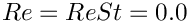 and 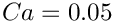 .
Global parameters
As usual, we create a namespace where we define the dimensionless parameters 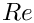, 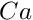 and the non-dimensional channel length  . As discussed in another tutorial, the Strouhal number defaults to one, so that we do not have to set it in this case. We also store the initial bubble radius and the bubble volume, as well as a scaling factor for the inflow velocity (this allows us to "switch off" the inflow when computing the initial steady solution). Finally we define the Poisson ratio for the generalised Hookean constitutive law that is used by pseudo-elastic mesh update.
. As discussed in another tutorial, the Strouhal number defaults to one, so that we do not have to set it in this case. We also store the initial bubble radius and the bubble volume, as well as a scaling factor for the inflow velocity (this allows us to "switch off" the inflow when computing the initial steady solution). Finally we define the Poisson ratio for the generalised Hookean constitutive law that is used by pseudo-elastic mesh update.
The driver code
We start by processing the command line arguments and create the generalised Hookean constitutive equations for the pseudo-elastic node-update. We then open various output files and build the problem.
We start by performing a steady solve (with the inflow switched off) to compute the initial configuration, a circular bubble in stationary fluid.
Next, the timestepper is initialised and an impulsive start performed. The inflow is switched on and the first few unsteady Newton solves are performed without adaptation.
To limit the distortion of the elements we allow then mesh adaptation (which involves the re-generation of the entire mesh) every few timesteps.
The problem class
As usual, we template the Problem class by the element type
The FaceElements are deleted and re-attached before and after each adaptation. Also, as discussed in another tutorial, we re-apply the boundary conditions and complete the build of all elements after each adaptation, using the helper function complete_problem_setup() (discussed below).
We define the post-processing functions to document the solution and to compute the error estimates.
We also provide helper functions to delete and create face elements adjacent to the bubble boundary.
The private data includes pointers to the fluid mesh, and the two face meshes which impose the kinematic and dynamic boundary conditions, and the volume constraint, respectively. We also store pointers to the Data that stores the unknown bubble pressure and to the VolumeConstraintElement that imposes the volume constraint and is "in charge of" the bubble pressure.
The problem constructor
We allocate the timestepper and build the VolumeConstraintElement that imposes the volume constraint. The element stores the volume that is to be conserved as well as the bubble pressure, which is determined from the volume constraint. The initial guess for the bubble pressure, 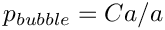, is appropriate for a static bubble in stationary fluid.
Next the outer boundary, consisting of four separate polylines, is built. Each polyline is defined by a start and an end point and is stored in a vector. This vector is then used to create the closed polygon required by Triangle.
Next the polygon representing the bubble in the initial setup is generated. (Recall that closed polygons must be subdivided into at least two distinct polylines.)
Once the boundary representation in form of polygons is completed the mesh is generated using Triangle. We specify the error estimator and set targets for the spatial adaptivity, and output the initial mesh.
We complete the problem setup, create the various surface meshes that impose the dynamic and kinematic boundary conditions and the volume constraint. We then combine the submeshes into a global mesh.
Problem setup
During the problem setup the position of all boundary nodes in the pseudo-elastic fluid mesh, apart from those on the bubble boundary, are pinned.
We pin both velocity components on the inflow, top and bottom boundaries and the vertical velocity component at the outflow.
Next, the bulk elements are made fully functional. For every element the pointers to the time, Reynolds number, Womersley number and the constitutive law for the mesh deformation are set.
Finally, we (re-)assign the velocity boundary values by imposing no slip on the channel walls, parallel outflow, and a Poiseuille profile at the inlet.
Generation of face elements
As usual we impose the kinematic and dynamic boundary condition at the free surface by attaching FaceElements to the relevant boundaries of the bulk elements. We specify pointers to the Capillary number and the bubble pressure . The pointer to the Strouhal number  does not need to be set, since it already defaults to a value of 1.0.
does not need to be set, since it already defaults to a value of 1.0.
The volume constraint elements are created in a similar way. Recall that the LineVolumeConstraintBoundingSolidElements compute the line integrals in equation (10) while the VolumeConstraintElement adds to this equation.
Post-processing
This member function documents the computed solution after every Newton solve.
Comments and Exercises
Mesh adaptation for problems with 'closed' free boundaries
We described in another tutorial how oomph-lib employs a two-stage process for the (re-)generation of unstructured meshes in domains whose curvilinear boundaries are represented by GeomObjects: we initially sample the GeomObject at a user-specified number of points (equally spaced along the relevant section of the GeomObject) to create the vertices for an initial polygonal representation of the curvilinear boundary. This polygonal boundary representation is used to generate a new mesh with Triangle. The nodes on the domain boundaries are then "snapped" onto the curvilinear boundaries where required.
In principle, the same methodology can be (and is) employed for the mesh regeneration in free-surface problems. However, in a free-surface problem the curvilinear boundary evolves freely as part of the solution and is therefore not described by a user-specified GeomObject. When re-generating the mesh we therefore create a temporary GeomObject by attaching FaceElements to the relevant mesh boundaries of the existing mesh. We then use the vertices of the face elements to create a polyline representation of the boundary. This is illustrated in the figure below which shows part of the original mesh (the nodes and triangular elements adjacent to the boundary) in black. The blue lines represent the FaceElements that are erected on the current curvilinear domain boundary (as defined by the boundaries of the "bulk" elements). The vertices of these FaceElements (red hollow circles) provide the vertices for the polyline representation of the boundary (red line).
Using this polyline representation of the boundary, a new mesh is built using Triangle. Depending on the target areas specified by the spatial error estimator, Triangle may erect multiple elements along each polyline segment. For instance in the figure below three elements have been created along the polyline segment created from FaceElement 3 in the original mesh.
Next, the boundary coordinates are set up and the nodes are snapped onto the curvilinear boundary that is still defined by the FaceElements that were attached to the original mesh, as shown below.

Note that the initial shape of moving free boundaries must not be described by TriangleMeshCurviLines. While the use of TriangleMeshCurviLines would ensure that the nodes are initially located exactly on the curvilinear boundary described by the associated GeomObject without having to "snap" them to their desired position, a problem arises when the mesh is adapted. When this happens, nodes on curvilinear boundaries that are described by TriangleMeshCurviLines are placed on the (presumably unchanged) geometry defined by the associated GeomObject rather than being placed on the deformed boundary as described above – the free surface therefore keeps jumping back to its initial position whenever the mesh is adapted which is unlikely to be desired! |
Modifications to the basic mesh re-generation procedure
The procedure described above is very robust and works satisfactorily in the example problem discussed in this tutorial. Below we discuss a a few optional modifications to the mesh regeneration procedure that are helpful to deal with complications that can arise in certain circumstances:
Unrefinement of polylines
As discussed above, Triangle generates a new mesh, based on (i) the polygonal representation of the boundary and (ii) the area targets provided by the spatial error estimator for the bulk elements. The polygonal boundary representation defines the minimum number of bulk elements that are generated next to the boundary – we showed above how multiple elements can be erected on a given boundary segment. However, since Triangle never merges any boundary segments this procedure can result in unnecessarily fine meshes near the boundary: once the bulk mesh has been refined to a certain level, the polygonal boundary representation cannot be coarsened, even if the spatial error estimator would allow much larger elements to be created at a later stage of the simulation.
We therefore provide the option to coarsen the polygonal boundary representation following its creation from the FaceElements that are attached to the current mesh. This is done by assessing if the (geometrical) boundary representation is unnecessarily fine, judged by how close any three adjacent vertices are to a straight line. This is illustrated in the sketch below: To assess if the middle vertex can be deleted, we determine the height of a circular segment connecting the three vertices. If the ratio of this height,  , to the distance 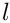 between the two outer vertices is less than a user-defined tolerance (i.e. if the local curvature is so small that the middle vertex is not required to represent the boundary sufficiently accurately), the middle vertex is deleted.
, to the distance 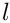 between the two outer vertices is less than a user-defined tolerance (i.e. if the local curvature is so small that the middle vertex is not required to represent the boundary sufficiently accurately), the middle vertex is deleted.

The tolerance for the unrefinement of polygons is set by the function
By default we allow polyline unrefinement (with a default tolerance of 0.04). Polyline unrefinement can be disabled by calling
where TriangleMesh is a base for the TriangleMeshClosedCurve class.
Refinement of polylines
It is also possible that the free surface deforms in such a way that the polyline representation of the domain boundary becomes too inaccurate, e.g. because the representation of the solution only requires fairly large elements. Even though large elements may be sufficient to represent the solution, the mesh-regeneration tends to fail when "snapping" the nodes onto the highly-curved curvilinear boundary (typically because elements near the boundary become highly distorted or even inverted).
We therefore provide the option to refine the polygonal representation of the boundary employing a criterion similar to the one used for unrefinement discussed above. To assess the need for a boundary refinement we consider each boundary segment and compute the distance from segment's mid-point to its counterpart on the curvilinear boundary. If the ratio of the distance between these points, , to the length of the segment connecting the vertices, , is larger than a user-specifiable tolerance, the point on the curvilinear boundary becomes an additional vertex of the polyline and the original segment is split into two as illustrated in the figure below:

The tolerance for the refinement of polygons is set by the function
By default we allow polyline refinement (with a default tolerance of 0.08). Polyline refinement can be disabled by calling
Redistribution of segments between polylines
The kinematic boundary condition (5) determines only the normal displacement of the boundary, hence the tangential displacement of nodes on the boundary is not controlled directly. It is therefore possible that nodes move along the perimeter of the curvilinear boundary and, as a result, one polyline may become much shorter than the others, as illustrated in the transition from a) to b) in the figure below. This is clearly undesirable and can be avoided by redistributing the vertices/segment between the polygon's constituent polylines such that each polyline spans an approximately equal fraction of the polygon's overall perimeter. This process is illustrated in b) and c) in the figure below. Note that the redistribution of segments does not change the shape of the polygonal boundary but merely the way in which it is represented in terms of polylines.

We provide the option to perform this step immediately after the generation of the updated polyline representation for the curvilinear boundary (and before the boundary refinement/unrefinement discussed above). Given that each polyline represents a distinct mesh boundary, the redistribution of segments between different polylines moves nodes from one boundary to another and, in general, this is clearly undesirable. Therefore, the redistribution of segments is is deactivated by default and must be activated by calling the function
Note that the redistribution of segments is not possible/sensible for TriangleMeshClosedCurve formed by TriangleMeshCurviLines since such boundaries are associated with a specific, continuous GeomObject with specific start/end coordinates.
Exercises
- As discussed above, we start the simulation by performing an initial steady Newton solve during which we deform the polygonal boundary that represents the air-liquid interface into its static equilibrium shape – a circle enclosing the required volume. This may seem like a rather costly way of creating a circular interface. Why not simply move the nodes on that boundary manually to their "correct" positions by adjusting their radial positions after returning from the mesh constructor? To explore this question, snap the required nodes manually onto the circular boundary and call the steady Newton solver. Why is the initial residual not equal to zero, even though we have manually assigned the correct solution as an initial guess?
- Comment out
create_volume_constraint_elements()anddelete_volume_constraint_elements()throughout the code and explain what happens. - Experiment with the refinement/unrefinement of polylines and explore the option to re-distribute segments between the polylines that define the boundaries of the bubble. Specifically, change the initial polygonal representation the bubble surface such that the first
TriangleMeshPolyLineonly represents 1/4 of the perimeter while the second one represents the remaining 3/4. Confirm that, following the mesh adaptation, the bubble boundaries are adjusted such that each boundary occupies approximately 1/2 of the bubble surface when the redistribution of polylines is enabled.
Source files for this tutorial
- The source files for this tutorial are located in the directory:
demo_drivers/navier_stokes/unstructured_adaptive_fs/ - The driver code is:
demo_drivers/navier_stokes/unstructured_adaptive_fs/adaptive_bubble_in_channel.cc .
PDF file
A pdf version of this document is available.